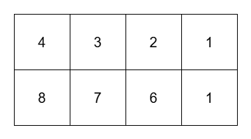

| Category | Difficulty | Likes | Dislikes |
|---|---|---|---|
| Algorithms | Hard | 7 | 3 |
array | stack | matrix | monotonic-stack
You are given a 2D matrix grid of size m x n. You are also given a non-negative integer k.
Return the number of submatrices of grid that satisfy the following conditions:
k.A submatrix (x1, y1, x2, y2) is a matrix that forms by choosing all cells grid[x][y] where x1 <= x <= x2 and y1 <= y <= y2.
Example 1:
Input: grid = [[4,3,2,1],[8,7,6,1]], k = 3
Output: 8
Explanation:

The 8 submatrices are:
[[1]][[1]][[2,1]][[3,2,1]][[1],[1]][[2]][[3]][[3,2]]Example 2:
Input: grid = [[1,1,1],[1,1,1],[1,1,1]], k = 1
Output: 36
Explanation:
There are 36 submatrices of grid. All submatrices have their maximum element equal to 1.
Example 3:
Input: grid = [[1]], k = 1
Output: 1
Constraints:
1 <= m == grid.length <= 1031 <= n == grid[i].length <= 1031 <= grid[i][j] <= 1091 <= k <= 109